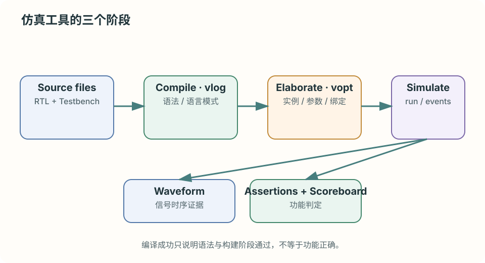
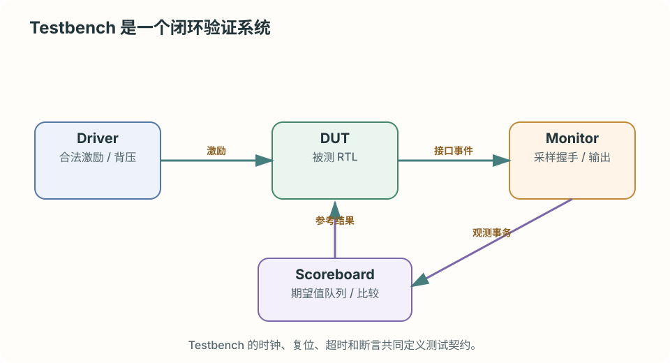
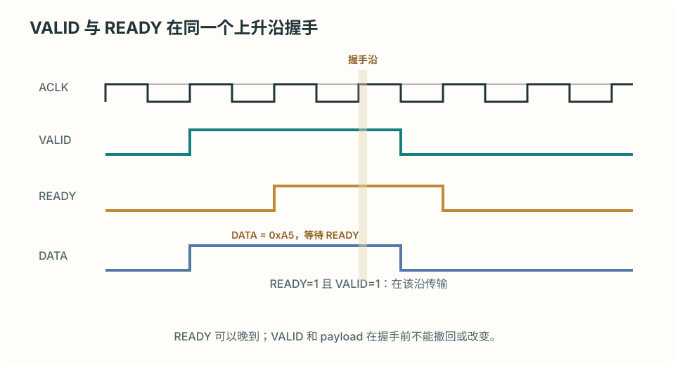

Questa 仿真：从编译、展开到可判定的验证
以同一 AXI4-Lite RTL 为实验对象，理解 Questa-Altera 的仿真阶段、波形、Driver/Monitor/Scoreboard 和授权边界。
01 / 仿真通过，究竟证明了什么？
RTL 仿真可以证明：在指定的激励、模型、参数和仿真时间范围内，DUT 的输出符合 testbench 中写出的预期。它不能证明未覆盖状态、未触发的协议边界、综合后的器件时序或板级电气行为。

当前 Altera 工具文档使用 Questa-Altera FPGA Edition 名称。旧工程可能还留有 ModelSim FPGA Edition 配置，但在新工程和文档中应先确认所安装 Quartus 版本支持的模拟器。Altera 对 ModelSim 与 Questa 的差异说明。
本章使用同一个 Chapter 19 AXI4-Lite DUT 和 testbench：Icarus Verilog 用于开源 CI 回归，Questa 脚本用于本地波形与仿真工具实践。两种工具跑同一测试，不代表两种工具的库模型、优化器和时序模型完全相同。
02 / Compile、Elaborate、Simulate：不要混为一个动作
Compile（编译）：解析 Verilog/SystemVerilog 文件、语言版本、宏、包和模块声明。语法错误、重复模块、缺失 include 通常在这个阶段暴露。
Elaborate（展开）：解析顶层层次、参数覆盖、generate 分支、模块实例和绑定关系。一个源文件可以编译成功，但若顶层缺失或实例参数不合法，展开仍会失败。
Simulate（仿真）：推进事件调度和时间，执行 testbench 与 DUT。此时才有时钟沿、驱动、采样、四态逻辑传播和断言结果。
在 Questa 命令行中，常见的入口是 vsim -c 与 vsim -do run.do；完整的模拟器版本、授权与调用选项以当前 Altera 仿真指南为准。Questa-Altera 命令行启动。
vlib work
vlog -sv -work work examples/rtl/axi4lite_regs.v examples/tb/tb_axi4lite_regs.sv
vsim -c -voptargs=+acc work.tb_axi4lite_regs
add wave -r /*
run -all+acc 用于保留观察所需的信号访问能力，但可能影响仿真优化与性能；不要在所有大规模回归中无条件开启最宽松的信号访问选项。
03 / Testbench 的四个角色：Driver、DUT、Monitor、Scoreboard

一个可维护的 testbench 至少需要：明确的时钟和复位；按协议驱动的 Driver；只在握手时采样事务的 Monitor；以及不依赖 DUT 内部实现的参考模型或期望值队列。
例如 AXI4-Lite 的一次写事务不是“AWVALID 拉高一拍、WVALID 拉高一拍”就算完成。地址和数据可能在不同周期握手；响应也可能因为 BREADY 为低而被延迟接收。Monitor 应分别观察 AW/W 握手，直到 B 响应被消费，再将这次事务作为一个完整操作记入 Scoreboard。
检查必须包含失败出口：$fatal、明确的 PASS 标记和 watchdog。没有超时保护的 testbench 可能在死锁时无限运行，CI 只会耗尽作业时间，而不是给出可定位的错误。
04 / 波形是时序证据：检查采样沿而不是只看信号高低

波形检查应把时钟沿、驱动区间、采样区间和事务边界放在同一时间轴。对于非阻塞赋值，testbench 在时钟沿立即读取值可能还处于 NBA 更新前；应使用正确的采样时序、clocking block 或在 NBA 更新后检查。
本仓库的 sim/questa/run.do 自动编译 Chapter 19 的 AXI4-Lite 模块和自检 testbench，展开顶层、添加波形并运行至结束：
vsim -c -do sim/questa/run.do
# Starter Edition 说明：
# 免费版仍需从 Altera 自助许可中心申请 no-cost license。官方说明：Questa-Altera FPGA Starter Edition 免费，但 elaboration 和 simulation 需要许可证；仅安装软件不足以开始仿真。付费 Edition 与 Starter Edition 在性能和容量上也存在差别。模拟器版本与许可。
05 / RTL 仿真、门级仿真和静态时序分析的边界
| 方法 | 能回答的问题 | 不能替代 |
|---|---|---|
| RTL 仿真 | 协议、功能、状态和边界条件 | 器件延迟和布线时序 |
| 门级 / post-fit 仿真 | 网表与选定时序模型下的行为 | 完整 STA 覆盖与所有模拟效应 |
| STA | 约束下的最大/最小路径时序 | 功能覆盖和协议正确性 |
| 板级测试 | 真实器件、时钟、IO 与外设运行 | 所有输入序列的穷举证明 |
CI 中运行 Icarus Verilog 是为了快速验证可移植 RTL；本仓库没有在公共 CI 中安装受许可保护的 Questa，也没有声称运行过 Altera post-fit 仿真。需要厂商原语、IP 模型或 post-fit 网表时，必须在匹配版本的本地工具环境中执行。
波形里看到 RVALID 拉高，能否直接判定读事务已经完成？
不能。只有某个上升沿 RVALID 和 RREADY 同时为高，才完成 R 通道传输。若 RREADY 持续为低，RVALID、RDATA 和 RRESP 必须保持稳定。